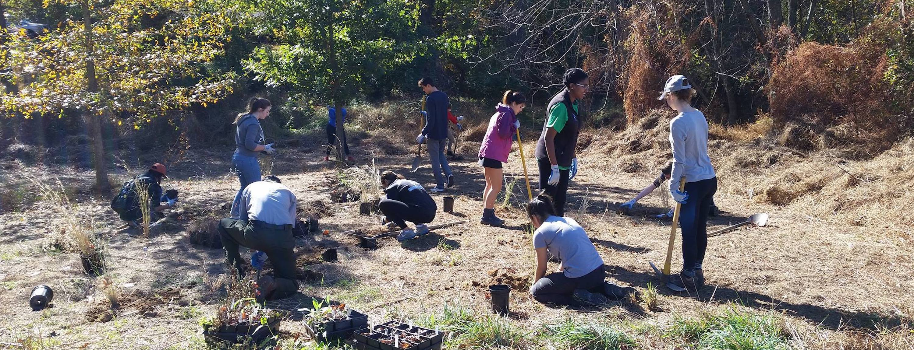

About Me
I am a recent graduate of Georgetown University, where I studied government with a concentration in political theory. My major area of interest is in the relationship between poltiics and technology, and down the line I'm hoping to go to grad school to study law and technology. For now, I'm looking for a job related to tech or tech policy where I can build up my skills, ideally at a small company or in a role where I can quickly take on new responsibilities. I've written a significant amount on bioethics and biotechnology but have also been teaching myself Python, data science, and machine learning techniques. The content on this page should demonstrate my skills in the areas of policy research, computer science (primarily shown through a portfolio of some data visualization projects), and general writing ability. (As well as HTML and CSS: everything on this page is coded from scratch!)
Some of my upcoming projects include: a paper using natural language processing to examine the differences in the way that scientists, bioethicists, and government commissions speak to the public about CRISPR, an ethics paper discussing the political ethics of investment in new technologies, and a short story exploring the potential social impact of widespread pet cloning. Check back in soon to see more of my work!
Policy Writing
As published by:
Musser, Micah. "Bioethics in Public Policy: Examining the Factors Contributing to the Success of U.S. Presidential Bioethics Commissions." In The Fellows Review, 2018-2019, edited by Erica Ngoenha, 140- 156. (Washington, DC: The Center for the Study of the Presidency and Congress, 2019).
". . . What is driving the declining interest in bioethics? There are several explanations, but one major factor seems to be the politicization of the issue, beginning early in the Bush presidency . . . By 2005, over half a dozen well-funded conservative organizations, many with religious ties, had sprung up to promote conservative positions on bioethics . . ."
Read the full text here.
Musser, Micah. 2019. "Preventing Pharmaceutical Companies from Exploiting Anti-Competitive Loopholes." Unpublished Sample Paper, July.
". . . Pharmaceutical companies have found a host of ways to cheat the current regulatory framework and artificially extend their patent protections. Closing these loopholes requires a similarly varied number of policy solutions. But . . . major progress can be made with a handful of simple reforms . . ."
Read the full text here.
Mandaville, Peter and Micah Musser. 2019. "Religion and the Prevention of Violent Extremism: Current Debates and Future Research Agendas." Discussion Paper. The Berkley Center for Religion, Peace, and World Affairs, March.
". . . A common pitfall facing P/CVE practitioners relates to simple shortsightedness . . . It is important for policymakers to consistently scrutinize the unanticipated consequences of their efforts, because states [which] engage with religion become participants in the construction of religion, whether they intend to or not . . ."
Read the full text here.
Casey, Shaun and Micah Musser. 2018. "Religious Actors and Climate Change: From Advocacy to Action." White Paper. The Berkley Center for Religion, Peace, and World Affairs, November.
". . . In short, the past five years have seen most of the world's religions coalescing around the common goal of advocating for action to address climate change. This advocacy work will remain crucial until there are domestic and international structures that can effectively limit greenhouse gas emissions . . ."
Read the full text here.
Data Visualizations
Scroll down to read about the data!

Performance on the Women, Peace, and Security Index (WPSI) by Province
Every year, the Georgetown Institute for Women, Peace, and Security uses a dozen different measures to assign a WPSI score to all countries, as well as sub-regions in India, Nigeria, and China. The top map in this figure shows the WPSI scores for all Chinese provinces, with the closeness indicating very little variation.
Surprisingly, however, this lack of variation is not due to the fact that similar conditions prevail for women throughout China. Rather, there is wide variation on some sub-metrics, as shown in the bottom two maps. However, regions that perform well on one measure tend to perform badly on others, leading to the "squeeze" in overall WPSI scores seen in the top map.
Source: GIWPS website. Made using Python, GeoPandas, Seaborn, and MATLAB. View source code here.
Performance on the Women, Peace, and Security Index (WPSI) by Province
Every year, the Georgetown Institute for Women, Peace, and Security uses a dozen different measures to assign a WPSI score to all countries, as well as sub-regions in India, Nigeria, and China. The top map in this figure shows the WPSI scores for all Chinese provinces, with the closeness indicating very little variation.
Surprisingly, however, this lack of variation is not due to the fact that similar conditions prevail for women throughout China. Rather, there is wide variation on some sub-metrics, as shown in the bottom two maps. However, regions that perform well on one measure tend to perform badly on others, leading to the "squeeze" in overall WPSI scores seen in the top map.
Source: GIWPS website. Made using Python, GeoPandas, Seaborn, and MATLAB. View source code here.

Changes in the Racial Composition of D.C. Wards
This gif shows the percentage of D.C. residents in each ward who are black, going from 1990 to 2017. Unfortunately, data before 2013 is only available from the U.S. Census, which is only conducted once every ten years. Data for 2013-2017 are estimates by the D.C. government, with no estimate available for 2015. Nonetheless, despite these limitations, the city is clearly becoming less black over time, a trend driving in large part by a growing population and severe gentrification in the northwest and northeast regions of the city.
Note that this figure anachronistically uses a 2017 map of the D.C. wards. The ward boundaries are occasionally adjusted pursuant to D.C. municipal law, which requires that the wards not vary in population by more than 5%.
Source: D.C. government website. Made using Python, GeoPandas, and MATLAB. View source code here.
Changes in the Racial Composition of D.C. Wards
This gif shows the percentage of D.C. residents in each ward who are black, going from 1990 to 2017. Unfortunately, data before 2013 is only available from the U.S. Census, which is only conducted once every ten years. Data for 2013-2017 are estimates by the D.C. government, with no estimate available for 2015. Nonetheless, despite these limitations, the city is clearly becoming less black over time, a trend driving in large part by a growing population and severe gentrification in the northwest and northeast regions of the city.
Note that this figure anachronistically uses a 2017 map of the D.C. wards. The ward boundaries are occasionally adjusted pursuant to D.C. municipal law, which requires that the wards not vary in population by more than 5%.
Source: D.C. government website. Made using Python, GeoPandas, and MATLAB. View source code here.

Seniority of U.S. Professors by Gender
This stacked bar plot shows the total number of men and women occupying different levels of seniority within academia. In the 20 years between 1993 and 2013, the total number of female professors has risen drastically, to the point where overall parity among the professoriate has nearly been reached. However, women remain enormously underrepresented among faculty with tenure, and significantly overrepresented among part-time professors. The reasons for this include a continuing promotion penalty for women who have children as well as low turnover of tenure-level positions during the 1990s and early 2000s.
Source: "Taking the Measure of Faculty Diversity," TIAA Institute, 2016. Made using Python and MATLAB. View source code here.
Seniority of U.S. Professors by Gender
This stacked bar plot shows the total number of men and women occupying different levels of seniority within academia. In the 20 years between 1993 and 2013, the total number of female professors has risen drastically, to the point where overall parity among the professoriate has nearly been reached. However, women remain enormously underrepresented among faculty with tenure, and significantly overrepresented among part-time professors. The reasons for this include a continuing promotion penalty for women who have children as well as low turnover of tenure-level positions during the 1990s and early 2000s.
Source: "Taking the Measure of Faculty Diversity," TIAA Institute, 2016. Made using Python and MATLAB. View source code here.

Women's Representation in U.S. Politics
This pair of graphs examines women's representation in American politics in two ways. The top graph plots the percentage of U.S. congresspeople, state legislators, and statewide elected officials who have been women between 1975 and the present. Statewide elected officials include governors, lieutenant governors, attorneys general, and so on. Clear bumps upward can be observed in 1991 and 2019.
The bottom graph indicates the percentage of each party's seats in Congress which have been held by women during the same time frame. Although women composed roughly equal shares of each party's seats until 1991, women have grown to represent just under 40% of the Democratic caucus but have never been more than a tenth of the Republican caucus.
Source: Center for American Women and Politics and Wikipedia. Made using Python and MATLAB. View source code here.
Women's Representation in U.S. Politics
This pair of graphs examines women's representation in American politics in two ways. The top graph plots the percentage of U.S. congresspeople, state legislators, and statewide elected officials who have been women between 1975 and the present. Statewide elected officials include governors, lieutenant governors, attorneys general, and so on. Clear bumps upward can be observed in 1991 and 2019.
The bottom graph indicates the percentage of each party's seats in Congress which have been held by women during the same time frame. Although women composed roughly equal shares of each party's seats until 1991, women have grown to represent just under 40% of the Democratic caucus but have never been more than a tenth of the Republican caucus.
Source: Center for American Women and Politics and Wikipedia. Made using Python and MATLAB. View source code here.
Fiction and
Narrative
Musser, Micah. "José Casanova: Profile of a Global Scholar." The Berkley Center for Religion, Peace, and World Affairs, July 8, 2019. Web.
". . . Religion had begun to reenter conversation among serious academics. [Casanova] recalls being brought onto the left-wing journal Telos, where 'the return of the sacred' and the emancipatory potential of religion were being discussed. But after so long dismissing religion, few scholars seemed to have a coherenet grasp on what it even was . . ."
Read the full text here.
Musser, Micah. "The Waiting Room." Unpublished Sample Short Story. 2019.
". . . The newcomer's clothes, in addition to being rather shabby, were quite mismatched: she was wearing a reasonably fancy though jaundiced yellow top paired with old jeans and mutilated tennis shoes. In truth, she had dressed and undressed multiple times before finally deciding to come to the hospital . . . Her smile, an observer might have noted, was likely once quite gleaming, though composed in its current state as it was of tar-yellowed teeth peeking out from behind wrinkled lips streaked with a rust-colored hue, it seemed closer to infected than infectious . . ."
Read the full text here.
Photo Gallery

❮
❯
At a tree planting with the National Park Service and GREEN, a club I co-founded at Georgetown. In the top picture, I'm just barely visible, squatting on the ground behind the figure on the right.
Delivering a talk on the political ethics of investment in emerging technologies. This talk was based on independent research I conducted over the summer of 2018 on the sponsorship of the Kalorama Fellowship at Georgetown University.
Moderating a panel with experts from Georgetown, George Mason, and American Universities on the political effects of social media. This panel was organized by the Tocqueville Forum Student Fellows, where I was president for a year and a half.
One of my favorite hobbies is baking! I especially enjoy making bread, pies, and pasta.